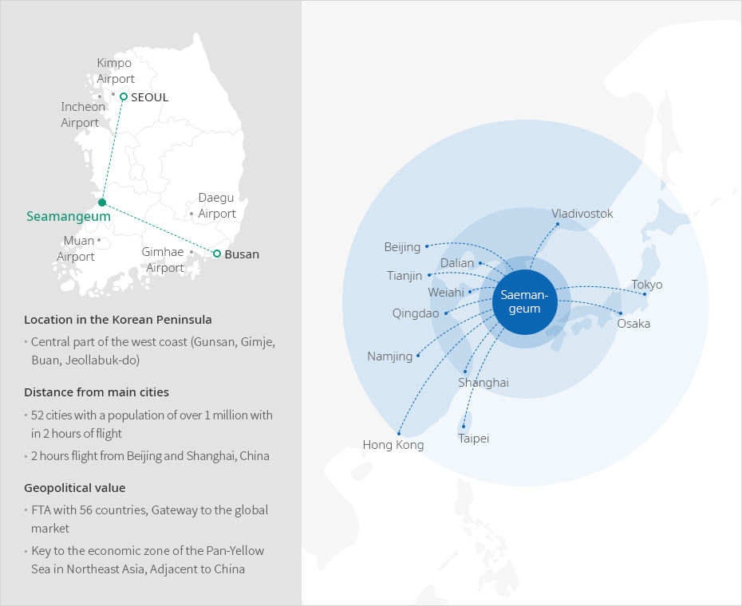
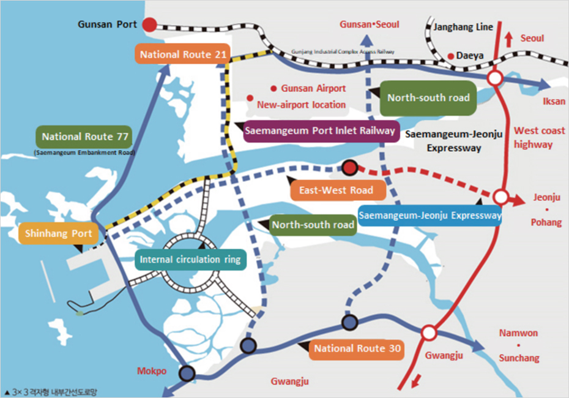

Saemangeum
- Home
- 투자의 시작
- Foreign-invested Company Priority Zones
- Saemangeum
산업입지에는 경제자유구역, 외국인투자지역 및 자유무역지역 등의 외국투자가를 지원하기 위한 지역이 있으며, 입지는 임대 또는 분양의 형태로 지원된다. 이러한 지역은 일정 요건 충족 시 입지지원 뿐만 아니라 조세감면이 적용되며 다른 법령에서 제한되는 사항에 대한 예외가 적용되는 경우도 있다.
“Establishing a green transportation system centered on eco-friendly public transportation” that can efficiently support Saemangeum's future urban growth and realize low-carbon green growth.
Locational conditions of Saemangeum Project
Locates at the waist of the Korean economy, The economic center of 1.5 billion Northeast Asia


-
Location in the Korean Penisula
- Central part of the west coast(Gunsan, Gimje, Busan, Jeollabuk-do)
-
Distance from main cities
- 52 cities with a population of over 1 million with in 2 hours of flight
- 2 hours flight from Beijing and Shanghai, China
-
Geopolitical value
- FTA with 56 countries, Gateway to the global market
- Key to the economic zone of the Pan-Yellow sea in Northeast Asia, Adjacent to China
Saeman-geum
- Beijing
- Dalian
- Tianjin
- Weiahi
- Qingdao
- Namjing
- Hong Kong
- Taipei
- Shanghai
- Vladivostok
- Tokyo
- Osaka

The Infrastructure of Saemangeum Projects
The Establishment of Green Transportation System Focused on Eco-Friendly Public Transportation
-
Airport
- Gunsan Airport (domestic flights in operation)
- Saemangeum New Airport (completed in 2028)
-
A port
- Gunsan Port: 29 berth
- Saemangeum New Airport: 9 berths
2 berths completed by 2025, 9 berths completed by 2040
-
Railway
- Seoul-Iksan KTX (1 hour 15 minutes, Iksan-Saemangeum 35 minutes by car)
- Saemangeum-Gunsan Railway (Connection from Gunsan to Gunsan National Industrial Complex)
-
Road
- East-West, South-North 3X3 grid type internal arterial road network
- Half-day regional transportation network connected to the whole country
West Coast Expressway (25 minutes) Honam Expressway (40 minutes) Iksan-Jangsu Expressway (50 minutes)
